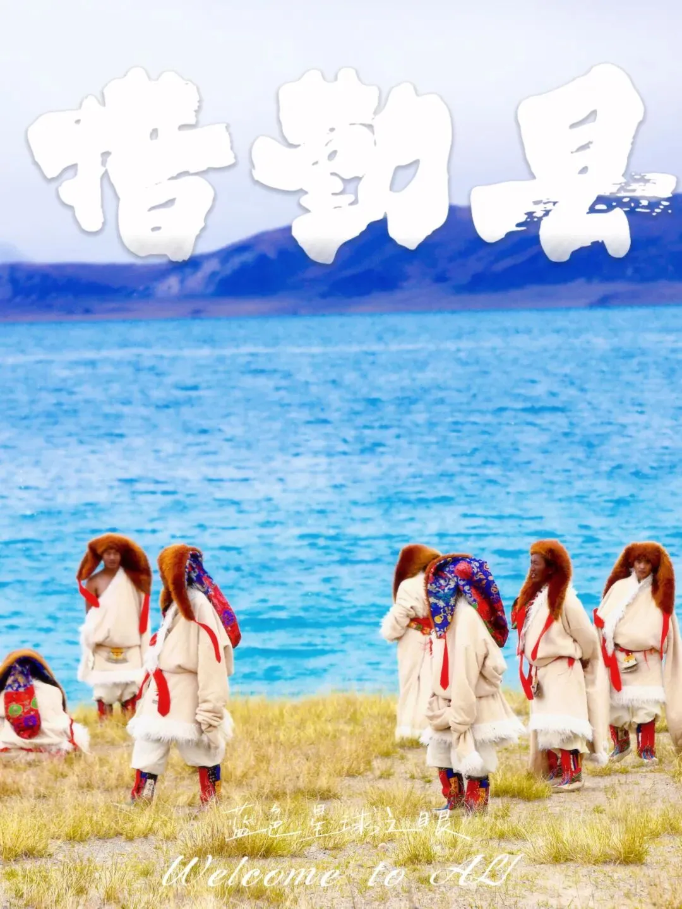
🌊 🍃 🌊 你见过几种蓝？
如果告诉你 有一片土地把全世界的蓝都藏进了同一个地方
你敢来认领属于自己的那一种吗？
在阿里辽阔的胸膛上 藏着一个名字本身就藏着秘密的地方 措勤 今天 就让我们掀开这片土地的面纱 走进措勤 一个让你“措”手不及 “措”过悔一生的蓝色秘境 01 🌲 措勤 被“蓝色”偏爱的地方
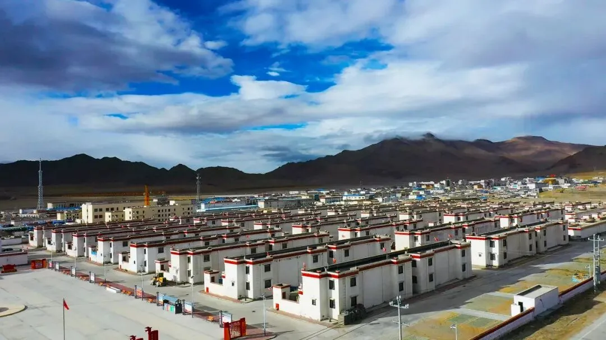
在阿里地区广阔的东南部，平均海拔4700米以上的羌塘高原深处，隐藏着一个被“蓝色”偏爱的地方——措勤。
“措勤”，藏语意为“大湖”，它因扎日南木错这片浩瀚的咸水湖而得名。这里不是庸常的目的地，而是无数自驾旅行者、摄影家与深度探险家心中的“天堂”， 在这里，自然的力量被放大到极致。
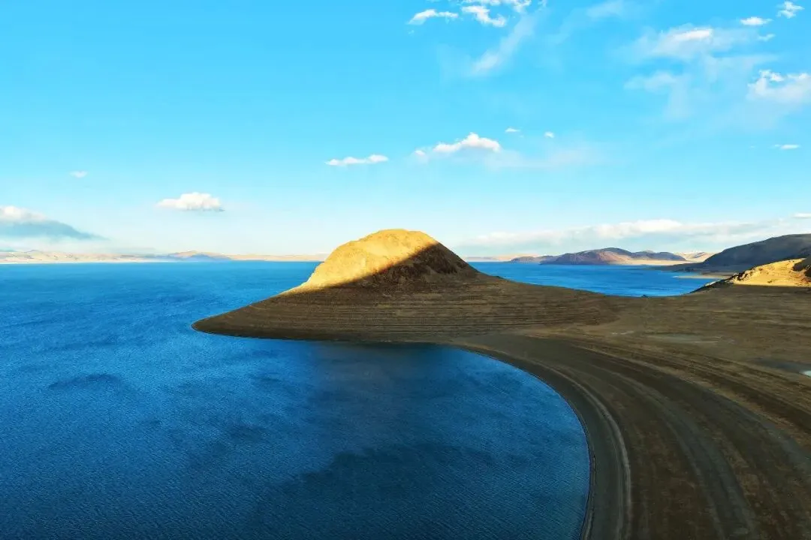
这里不仅是地理上的“阿里东大门”，更是心灵通往自由的必经驿站。
02 🌲 扎日南木错 直抵人心的蔚蓝彼岸 👇 👇 👇
阿
里
措
勤


⭕️ 扎日南木错 作为西藏第三大湖泊，亦是阿里地区面积最大的湖泊，扎日南木错是措勤最耀眼的明珠。它宛如一颗镶嵌在羌塘大地上的蓝宝石，湖面开阔如海，透明度极高，光线在一天之中的变化会赋予湖面从奶蓝到深蓝的多种层次。
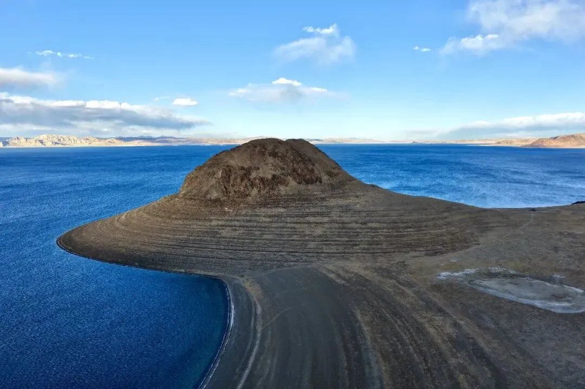
在扎日南木错不可错过这些体验： 前往 北岸观景台 ，在草原上感受“越野越阿里 ”的狂野；
在 木诺山孤峰 俯瞰湖心颜色的变幻，看沙丘与湖水的魔幻碰撞，这里是航拍爱好者的天堂；
前往南岸 “草帽山” ，看一圈一圈的湖岸线，感受地球的沧海桑田；在日落时赶到 “美人尖” ， 守候一场高原落日，感受光线的瞬息万变；
在扎日南木错湖畔静坐，看水鸟翩跹，感受那一刻天地间只剩风声与心跳的宁静； 沿着湖岸线行驶，寻找藏羚羊、藏野驴的踪迹，感受“天苍苍，野茫茫”的辽阔。
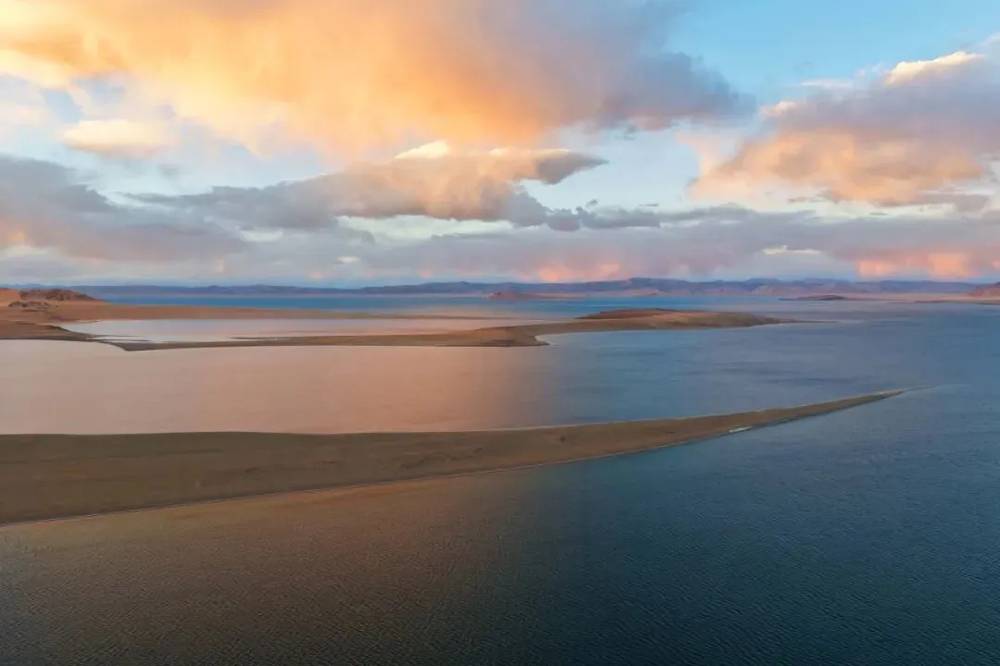
🌊 观湖小贴士 1🎫 交通：从措勤县城向东北方向行驶约60公里即可到达北岸观景台，最后路段为非铺装路面，建议驾驶高底盘SUV前往； 从措勤县城往南行驶35公里到南岸“草帽山”，再从草帽山行驶约1小时到达“美人尖”，非铺装路面，建议四驱越野车。
2.⏰ 最佳时间： 6月至9月是最佳观赏期，气候适宜，湖面解冻，水草丰美。
3.⚠️ 注意： 扎日南木错周边属于自然保护区，请沿道路行驶，勿碾压草场。
03 🌲 天路双雄 与
✅ 线路亮点：
在措勤，有两处令自驾爱好者心潮澎湃的“天路之巅”——与。它们不仅是地理高度的挑战，更是视觉震撼的盛宴。
👇 👇 👇
阿
里
措
勤

⭕️ ：海拔5830米的绚烂图景
海拔5830米，被认为是世界上海拔最高的民用公路垭口。这里不是普通的山口，而是一片铺展到天边的绚烂图景，赭红、暗紫、铁灰、明黄层层叠叠，在高原刺眼的阳光下呈现出惊心动魄的色泽。
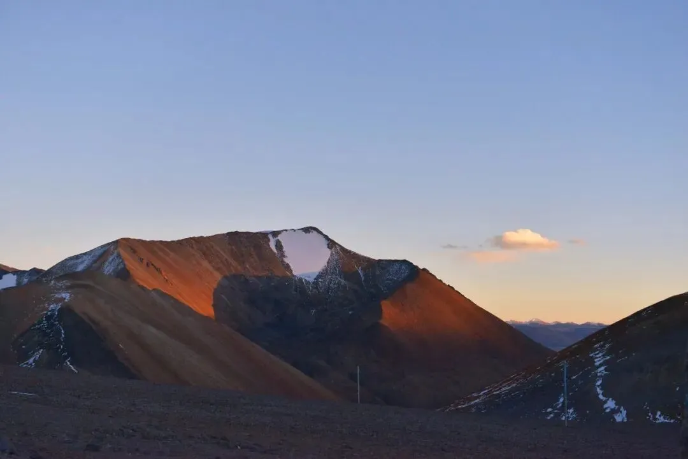
从空中俯瞰，那些深浅不一的红色条纹，像是远古巨人用沾满矿物的画笔，在岩壁上随意挥洒的抽象画作。最令人惊叹的是，在这片炽热的红色之中，偶尔镶嵌着翡翠般的高山湖泊，水的柔美与岩的刚烈形成了极致对比。那些岩层记录着至少6500万年前的故事——当印度板块与欧亚板块猛烈相撞，古特提斯海退去，这些曾经的海底沉积被推上世界之巅。
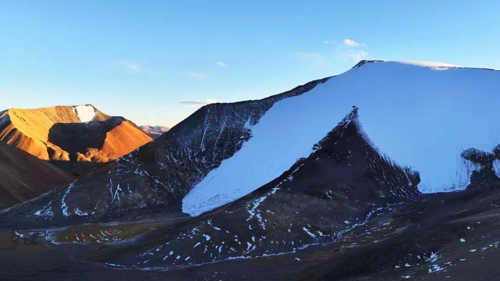
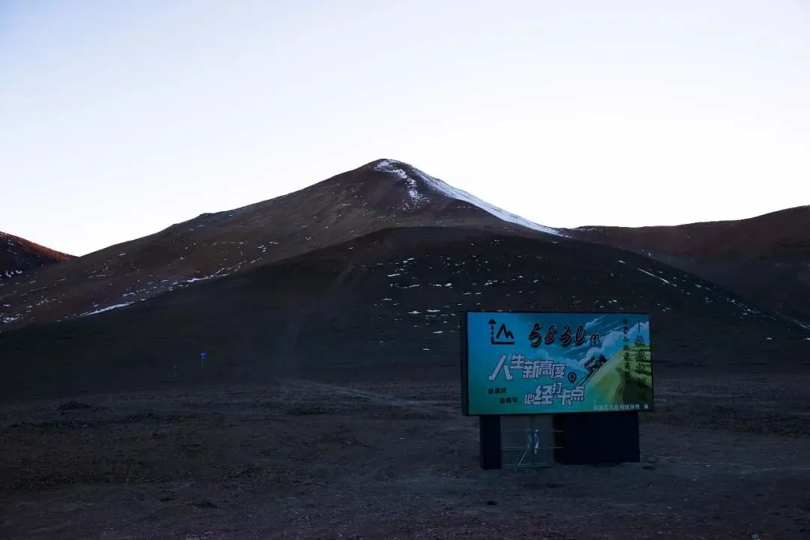
〓 ⭕️ ：中国国道最高点
海拔5566米，是中国国道的最高点。这里是G216国道的重要节点。
翻越，本身就是一次值得铭记的旅行体验。全年有2-4个月的冰封雪积期，天气多变，但当你在垭口停下，回望来路，那种征服世界之巅的成就感，将伴随一生。
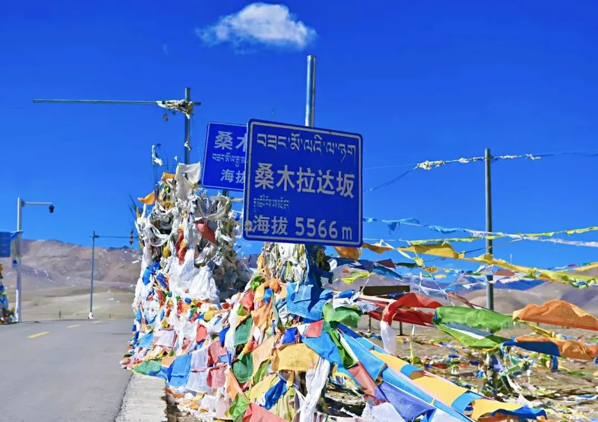
〓 🌊 观址小贴士 1📍 位置：位于216国道上， 是G216国道的重要节点。 可以 导航 “” ，非铺装路面，需越野车前往。
2.🏔️ 海拔：约 5830米/5566 米， 避免剧烈运动。
3.📜 天气： 夏季（6-9月）是最佳通行季节，避开冰封期。
04 🌲 冰与火之歌 夏岗江雪山与噶荣温泉
✅ 线路亮点：
在穿过措勤县的G216国道上，大自然的两种极致力量在此相遇。一边是海拔6822米的夏岗江雪山，终年积雪、冷酷圣洁；一边是泉华斑斓的噶荣温泉，热气蒸腾、温暖包容。一冷一热，一刚一柔，共同谱写着一曲高原上的“冰与火之歌”。
👇 👇 👇
阿
里
措
勤


⭕️ 夏岗江雪山 从措勤沿216国道一路向北，你将邂逅措勤县境内最壮观的地标——夏岗江雪山。这座海拔6822米的雪峰地处措勤、改则、尼玛三县交界处，属于冈底斯山脉北段。它不仅是地理坐标，更是一座承载着凄美传说的雪山。
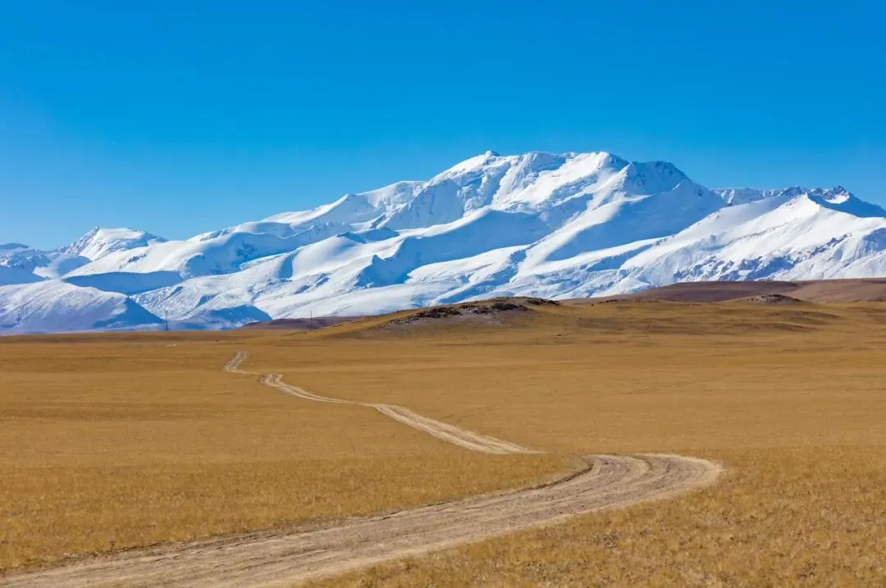
在3048公里处的观景台，你可以清晰观察到冰川侵蚀形成的角峰、刃脊等典型地貌。现场观看比照片更加震撼人心。
当清晨的第一缕阳光洒在夏岗江雪山的雪峰上，雪峰上显现出日照金山的壮丽景象；傍晚的余晖中，雪山披上玫瑰色的霞光，都是摄影的绝佳时机。
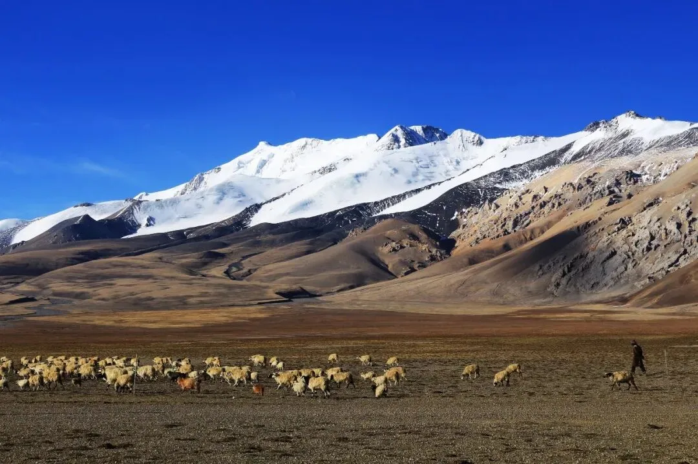
〓 夏岗江雪山 ⭕️ 噶荣温泉 在216国道3116公里处，你会邂逅噶荣温泉（又称噶荣阿嘎）。这里距县城约70公里，位于江让乡美朵村嘎荣组。
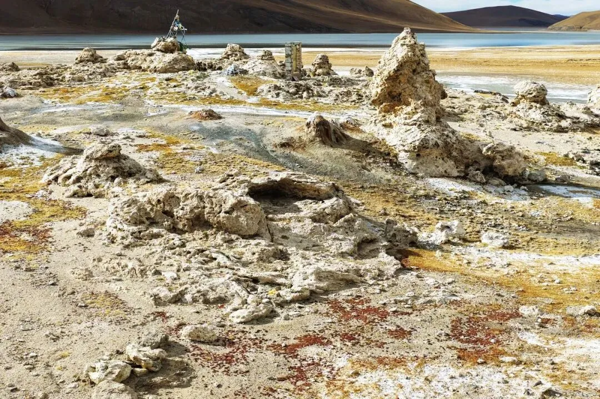
此处共有大小泉眼10余处，涌出硫磺、碳酸盐及其他矿物质。温泉水对关节炎、皮肤病等具有很好的疗效。但最令人惊叹的，是泉水中的矿物质沉积形成的泉华奇观——塔状、棒槌状、橄榄状的泉华柱错落有致地分布在巨大的白色泉华台上。从远处看去，犹如一片白色的古堡圈，耸立在碧绿如茵的草原上，非常吸引游客的眼球。
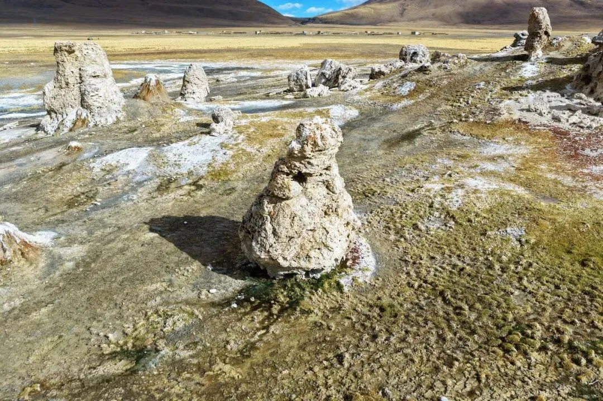
温泉水水质清澈透明，水底沉积物一片色彩斑斓。泉眼细小，喷薄而出的滚烫温泉与不远处静谧荡漾的嘎荣错湖泊融洽地共存于高原，让人由衷叹服大自然的神奇。温泉周围是丰茂的嘎荣草场，草原上牛羊成群，牧人的歌声在草原上飘荡。
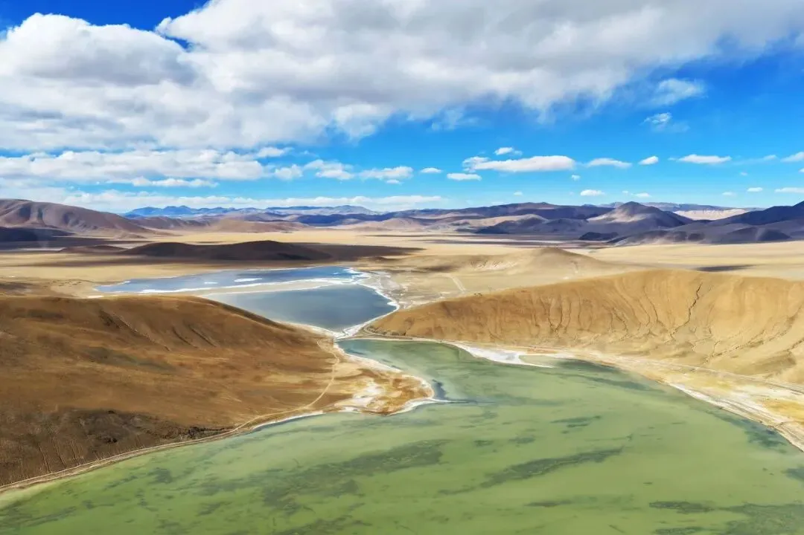
〓 噶荣湖 🌊 游览小贴士 1.🚗 寻访： 夏岗江雪山：位于措勤县达雄乡，从县城沿G216向北行驶约100公里，3048公里处有观景台。
噶荣温泉： 距县城约74公里， G216往南3116公里处。可以导航“噶荣错”。
2.🕒 生态保护： 夏岗江雪山已纳入羌塘国家级自然保护区范围，禁止一切登山活动，请在规定区域文明观赏。温泉区域请勿乱扔垃圾。
05 🌊 双色姊妹湖 达瓦错、其朵错的惊喜 👇 👇 👇
阿
里
措
勤


⭕️ 达瓦错 离开措勤县城北上改则，你会邂逅形似月牙的达瓦错。湖面在阳光下泛着银光，是216国道上的必打卡点。
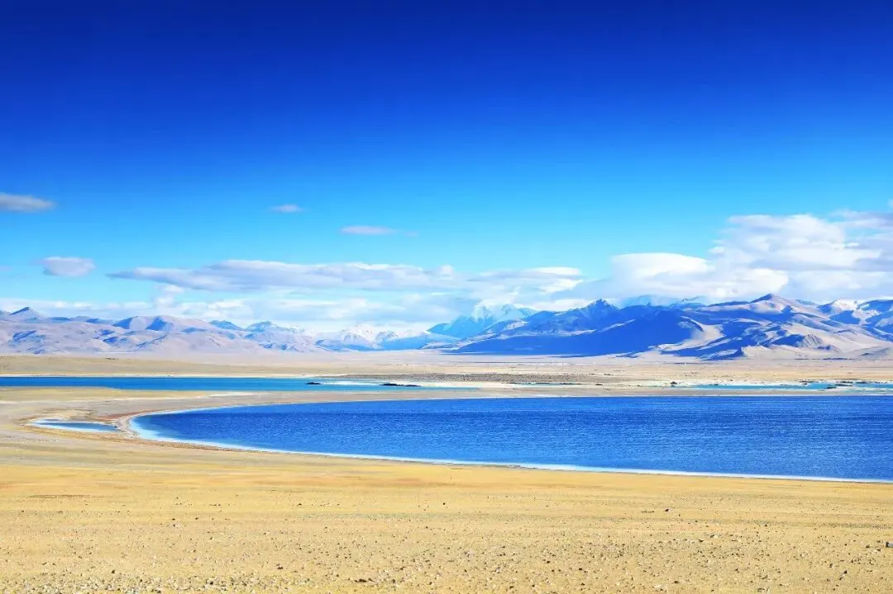
〓达瓦错 ⭕️ 其朵错 其朵错与达瓦错相邻，它们各有特色，或翠绿如玉，或深蓝如墨，可谓措勤“双色湖”。
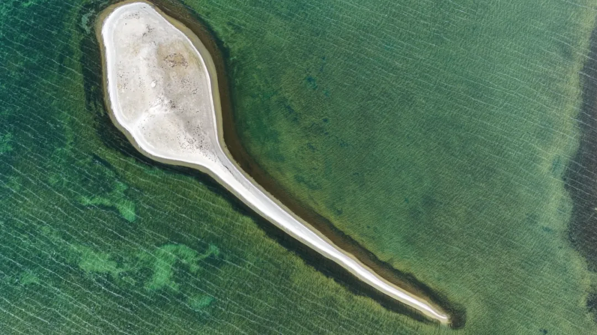
🌊 游玩小贴士 1.🚗 寻访：紧邻 G216国道 ，自驾便利， 路况极佳，非常适合自驾。
2.🕒 拍摄： 清晨和傍晚光线柔和，是拍摄湖泊倒影和野生动物的黄金时间。带上长焦镜头，捕捉藏原羚的灵动身影。
06 💐 人文之光 门东寺 👇 👇 👇
阿
里
措
勤


⭕️ 门东寺 门东寺位于措勤县措勤镇门东村，距县城向北约2公里处， 始建于19世纪，属于噶玛噶举派。
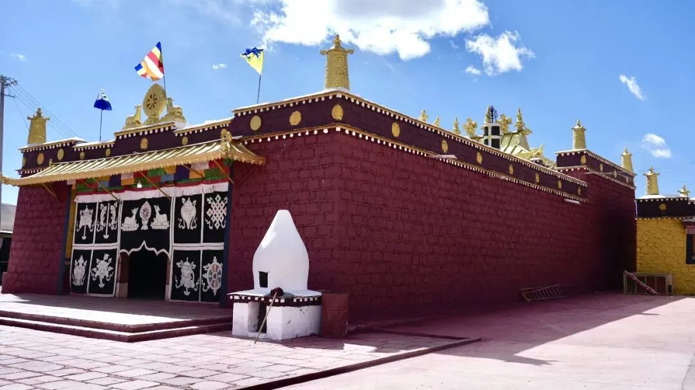
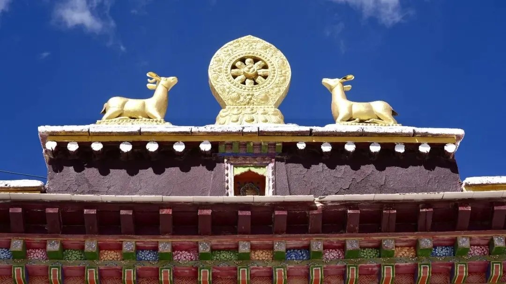
🌊 观寺小贴士 1.🚗 寻访： 距县城仅2公里，非常便利，可作为措勤镇周边的人文游览点。
2.🎨 文化尊重：进入寺院请保持安静，遵守寺院规定，未经允许请勿拍摄僧人和殿堂内部。
3.🕒 周边：游览完门东寺，可在措勤镇感受高原小城的独特氛围。
07 🐾 高原牧场与牧民生活 羌塘的灵魂 👇👇👇 措勤是阿里地区重要的纯牧业县。措勤有着300余年历史的磁石“帕卓”，是西藏唯一带有弹性舞步的舞蹈，被列为自治区级非物质文化遗产。
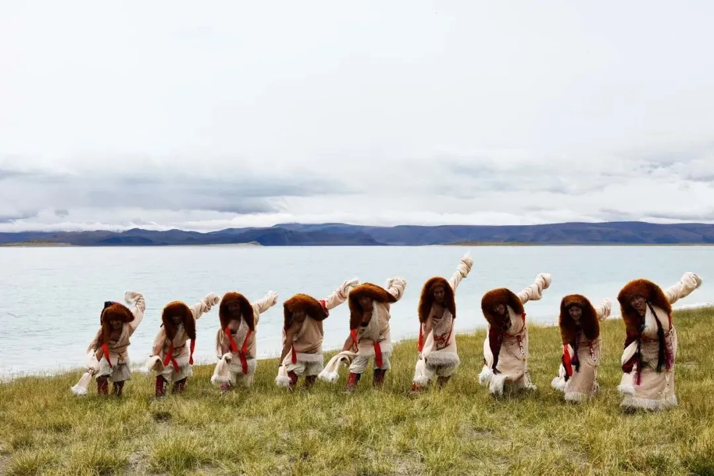
⭕️ 推荐线路： 阿里中北线的必经之站
🗺️ 经典3日游行程建议： 🚗 Day 1（南线进入天路挑战）：
上午：从萨嘎县方向沿G216北上，翻越海拔5566米的 ——中国国道最高点，感受“世界之巅”的壮美。
途经 噶荣温泉 ，欣赏白色泉华台、色彩斑斓的泉华柱，泡一次温泉。
下午：前往 ，挑战世界海拔最高的民用公路垭口！
傍晚： 夜宿措勤县城 🚗Day 2（感受人文底蕴，拍摄风景大片）：
上午： 前往 门东寺 （距县城仅2公里），感受近200年历史的嘎玛嘎举派寺院的人文气息。
中午：返回县城午餐，品尝牦牛肉火锅。
下午： 扎日南木错南岸草帽山+美人尖 ，傍晚的光影最是惊艳
傍晚： 夜宿措勤县城 上午： 从措勤县城出发，向东北方向行驶约60公里前往 扎日南木错北岸 。木诺山孤峰俯视湖面，无人机观 陨石坑 。
下午：沿G216北上，沿途欣赏 达瓦错与其朵错 ； 夏岗江雪山观景台 观雪山。
傍晚： 宿达雄乡或返回措勤
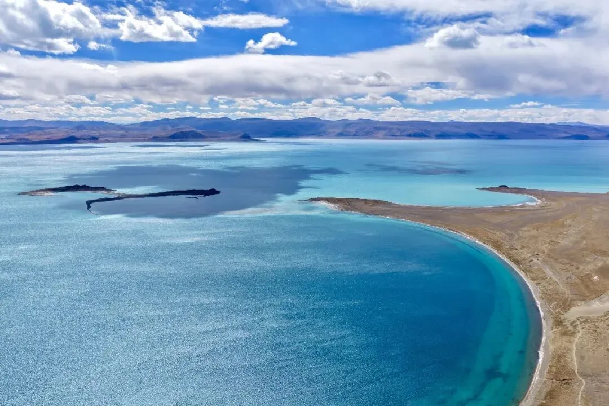
📖 打卡小贴士 1.🧥 穿衣指南：高原昼夜温差极大，哪怕夏季也需准备冲锋衣或羽绒服。
2.💊 健康：措勤海拔高，需做好准备，避免剧烈运动，备好氧气瓶及常用药品 。
3.🛣️ 交通：建议自驾或包车前往， 路段为非铺装路面，建议四驱越野车；虽已铺装，但仍需注意天气和车况。路况整体不错，但需注意区间测速和过路动物 。
4.♻️环保： 高原生态脆弱，请带走每一片垃圾，保护我们共同的羌塘净土。
有人问里里 措勤到底有什么？
措勤有 蓝 蓝到让你怀疑 自己前半生见过的所有蓝色都是赝品 措勤有 高 高到让你站在5830米的垭口 觉得自己伸手就能摘下星星 措勤有 故事 有少女化作雪山的千年守候 有6500万年前的海底 在今天被你踩在脚下 措勤还有 温度 有滚烫的温泉 拥抱每一个远道而来的疲惫灵魂 如果你问里里 什么样的旅行才算圆满？
里里会说 去一次措勤吧 在那里 你会看见地球最初的模样 也会遇见那个最真实的自己
· 更多精彩 · 请关注“西藏阿里文旅”视频号 ▼▼▼
编辑：何思瑜 责编：陈利 终审：米玛桑珠
编辑：何思瑜 责编：陈利 终审：米玛桑珠
Blue Dream on the Plateau's Summit: Meeting Coqen on National Highway G216
Source: Tibet Ngari Cultural Tourism | Date: March 22, 2026
How many kinds of blue have you seen? In the vast chest of Ngari, there is a place whose name itself hides a secret — Coqen.
01. Coqen: A Place Favored by Blue
In the southeastern part of Ngari, deep within the Changtang Plateau at an average elevation of over 4,700 meters, lies Coqen. "Coqen" means "Great Lake" in Tibetan, named after Zhari Namco. This is a paradise for self-driving travelers, photographers, and explorers.
02. Zhari Namco: The Azure Shore That Reaches the Heart
As the third largest lake in Tibet and the largest in Ngari, Zhari Namco is like a sapphire inlaid in the Changtang earth. Must-visit: North Shore Platform, Munuo Mountain Peak, Straw Hat Mountain, Beauty's Point. Best time: June to September.
03. Twin Heavenly Passes
Laqiongla Pass (5,830m) — considered the world's highest civilian highway pass. A splendid picture of ochre, purple, gray, and yellow layers.
Sangmula Daban (5,566m) — the highest point of China's national highway system on G216.
04. Song of Ice and Fire
Xiagangjiang Snow Mountain (6,822m) — year-round snow, cold and holy. Viewing platform at G216 3,048km.
Garong Hot Spring — at G216 3,116km. Over 10 spring outlets with colorful sinter terraces like a white ancient castle.
05. Twin Sister Lakes
Dawa Co — crescent-shaped, shimmering silver. Qiduo Co — adjacent, one emerald green, one deep blue. Coqen's "twin-color lakes."
06. Mendong Monastery
Built in the 19th century, Karma Kagyu sect. Only 2km north of Coqen town.
07. Highland Pastures
Coqen is an important pure pastoral county. The 300-year-old "Pazhuo" dance is a regional intangible cultural heritage.
Classic 3-Day Itinerary
Day 1: Saga County - Sangmula Daban - Garong Hot Spring - Laqiongla Pass - Coqen town
Day 2: Mendong Monastery - Yak hotpot - Zhari Namco south shore (Straw Hat Mountain + Beauty's Point)
Day 3: Zhari Namco north shore - Dawa Co & Qiduo Co - Xiagangjiang Snow Mountain
Coqen has blue, height, stories, and warmth. Go to Coqen — you will see the Earth's original form and meet your most authentic self.